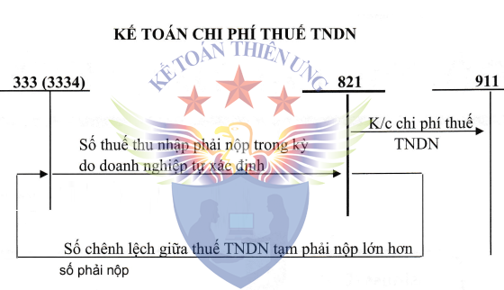

Hướng dẫn cách hạch toán chi phí thuế thu nhập doanh nghiệp - Tài khoản 821 áp dụng chế độ kế toán theo Thông tư 99/2025/TT-BTC mới nhất 2026, cách hạch toán thuế TNDN tạm tính quý và quyết toán cuối năm, cách hạch toán kết chuyển thuế TNDN cuối kỳ ...
1. Tài khoản 821: Chi phí thuế thu nhập doanh nghiệp
Theo Thông tư 99/2025/TT-BTC hướng dẫn chế độ kế toán mới nhất 2026 (thay thế cho Thông tư 200/2014/TT-BTC)
a) Nguyên tắc chung
- Tài khoản này dùng để phản ánh chi phí thuế thu nhập doanh nghiệp của doanh nghiệp bao gồm chi phí thuế thu nhập doanh nghiệp hiện hành, chi phí thuế thu nhập doanh nghiệp hoãn lại phát sinh trong năm làm căn cứ xác định kết quả hoạt động kinh doanh sau thuế của doanh nghiệp trong năm tài chính hiện hành.
- Chi phí thuế thu nhập doanh nghiệp hiện hành bao gồm chi phí thuế TNDN hiện hành theo quy định của Luật thuế thu nhập doanh nghiệp và chi phí thuế TNDN bổ sung theo quy định về thuế tối thiểu toàn cầu. Trong đó:
- Chi phí thuế thu nhập doanh nghiệp hiện hành theo quy định của Luật thuế thu nhập doanh nghiệp là số thuế thu nhập doanh nghiệp phải nộp tính trên thu nhập chịu thuế trong năm và thuế suất thuế thu nhập doanh nghiệp hiện hành.
- Chi phí thuế thu nhập doanh nghiệp bổ sung theo quy định về thuế tối thiểu toàn cầu là số thuế thu nhập doanh nghiệp mà doanh nghiệp phải nộp bổ sung vào NSNN được xác định theo quy định của pháp luật về thuế tối thiểu toàn cầu. Khi ghi nhận chi phí thuế thu nhập doanh nghiệp bổ sung theo quy định về thuế tối thiểu toàn cầu, doanh nghiệp đồng thời ghi nhận tài sản thuế thu nhập hoãn lại.
- Chi phí thuế thu nhập doanh nghiệp hoãn lại là số thuế thu nhập doanh nghiệp sẽ phải nộp trong tương lai phát sinh từ việc:
- Ghi nhận thuế thu nhập hoãn lại phải trả trong năm;
- Hoàn nhập tài sản thuế thu nhập hoãn lại đã được ghi nhận từ các năm trước.
- Thu nhập thuế thu nhập doanh nghiệp hoãn lại là khoản ghi giảm chi phí thuế thu nhập doanh nghiệp hoãn lại phát sinh từ việc:
- Ghi nhận tài sản thuế thu nhập hoãn lại trong năm;
- Hoàn nhập thuế thu nhập hoãn lại phải trả đã được ghi nhận từ các năm trước.
b) Nguyên tắc kế toán chi phí thuế thu nhập doanh nghiệp hiện hành
- Hàng quý, doanh nghiệp căn cứ vào tờ khai thuế thu nhập doanh nghiệp để ghi nhận số thuế thu nhập doanh nghiệp tạm phải nộp vào chi phí thuế thu nhập doanh nghiệp hiện hành.
Cuối năm tài chính, căn cứ vào tờ khai quyết toán thuế thu nhập doanh nghiệp, nếu số thuế thu nhập doanh nghiệp tạm phải nộp trong năm nhỏ hơn số phải nộp cho năm đó, doanh nghiệp ghi tăng chi phí thuế thu nhập doanh nghiệp hiện hành là số chênh lệch giữa số thuế thu nhập doanh nghiệp phải nộp trong năm lớn hơn số đã tạm nộp của năm đó. Trường hợp số thuế thu nhập doanh nghiệp tạm phải nộp trong năm lớn hơn số phải nộp của năm đó, doanh nghiệp phải ghi giảm chi phí thuế thu nhập doanh nghiệp hiện hành là số chênh lệch giữa số thuế thu nhập doanh nghiệp tạm phải nộp trong năm lớn hơn số phải nộp.
- Trường hợp phát hiện sai sót không trọng yếu liên quan đến khoản thuế thu nhập doanh nghiệp phải nộp của các năm trước, doanh nghiệp được hạch toán tăng (hoặc giảm) số thuế thu nhập doanh nghiệp phải nộp của các năm trước vào chi phí thuế thu nhập doanh nghiệp hiện hành của năm phát hiện sai sót.
- Đối với các sai sót trọng yếu, doanh nghiệp điều chỉnh hồi tố theo quy định của Chuẩn mực kế toán Việt Nam số 29 - Thay đổi chính sách kế toán, ước tính kế toán và các sai sót.
- Cuối kỳ kế toán, doanh nghiệp phải kết chuyển chi phí thuế thu nhập doanh nghiệp hiện hành phát sinh trong kỳ vào tài khoản 911 - Xác định kết quả kinh doanh để xác định lợi nhuận sau thuế trong kỳ kế toán.
c) Nguyên tắc kế toán chi phí thuế thu nhập doanh nghiệp hoãn lại
- Cuối kỳ kế toán, doanh nghiệp phải xác định chi phí thuế thu nhập hoãn lại theo quy định của Chuẩn mực kế toán Việt Nam số 17 - Thuế thu nhập doanh nghiệp.
- Doanh nghiệp không được phản ánh vào tài khoản này tài sản thuế thu nhập hoãn lại hoặc thuế thu nhập hoãn lại phải trả phát sinh từ các giao dịch được ghi nhận trực tiếp vào vốn chủ sở hữu.
- Cuối kỳ kế toán, doanh nghiệp phải kết chuyển số chênh lệch giữa số phát sinh bên Nợ và số phát sinh bên Có Tài khoản 8212 - Chi phí thuế thu nhập doanh nghiệp hoãn lại vào Tài khoản 911 - Xác định kết quả kinh doanh.
Sơ đồ chữ T hạch toán tài khoản 821

2. Kết cấu và nội dung Tài khoản 821:
|
Bên nợ |
Bên Có |
|
- Chi phí thuế thu nhập doanh nghiệp hiện hành phát sinh trong năm; - Số thuế thu nhập doanh nghiệp hiện hành của các năm trước phải nộp bổ sung do phát hiện sai sót không trọng yếu của các năm trước được ghi tăng chi phí thuế thu nhập doanh nghiệp của năm hiện tại; - Chi phí thuế thu nhập doanh nghiệp hoãn lại phát sinh trong năm từ việc ghi nhận thuế thu nhập hoãn lại phải trả (là số chênh lệch giữa thuế thu nhập hoãn lại phải trả phát sinh trong năm lớn hơn thuế thu nhập hoãn lại phải trả được hoàn nhập trong năm); - Chi phí thuế thu nhập doanh nghiệp hoãn lại tương ứng với khoản hoàn nhập tài sản thuế thu nhập hoãn lại (số chênh lệch giữa tài sản thuế thu nhập hoãn lại được hoàn nhập trong năm lớn hơn tài sản thuế thu nhập hoãn lại phát sinh trong năm); - Chi phí thuế thu nhập doanh nghiệp hiện hành phải nộp bổ sung phát sinh trong năm theo quy định về thuế tối thiểu toàn cầu; - Số chi phí thuế thu nhập doanh nghiệp hiện hành phải nộp bổ sung vào năm kê khai do số thuế thu nhập doanh nghiệp đã ghi nhận của năm phát sinh nghĩa vụ nhỏ hơn số thuế thu nhập doanh nghiệp phải nộp theo kê khai theo quy định về thuế tối thiểu toàn cầu; - Kết chuyển chênh lệch giữa số phát sinh trong kỳ của bên Có Tài khoản 8212 lớn hơn số phát sinh trong kỳ của bên Nợ Tài khoản 8212 vào bên Có Tài khoản 911 - Xác định kết quả kinh doanh. |
- Số thuế thu nhập doanh nghiệp hiện hành thực tế phải nộp trong năm nhỏ hơn số thuế thu nhập doanh nghiệp hiện hành tạm phải nộp, được giảm trừ vào chi phí thuế thu nhập doanh nghiệp hiện hành đã ghi nhận trong năm; - Số thuế thu nhập doanh nghiệp hiện hành phải nộp trong năm hiện tại được ghi giảm do phát hiện sai sót không trọng yếu của các năm trước; - Ghi giảm chi phí thuế thu nhập doanh nghiệp hoãn lại tương ứng với ghi nhận tài sản thuế thu nhập hoãn lại (số chênh lệch giữa tài sản thuế thu nhập hoãn lại phát sinh trong năm lớn hơn tài sản thuế thu nhập hoãn lại được hoàn nhập trong năm); - Ghi giảm chi phí thuế thu nhập doanh nghiệp hoãn lại tương ứng với hoàn nhập thuế thu nhập hoãn lại phải trả (số chênh lệch giữa thuế thu nhập hoãn lại phải trả được hoàn nhập trong năm lớn hơn thuế thu nhập hoãn lại phải trả phát sinh trong năm); - Ghi giảm chi phí thuế thu nhập doanh nghiệp hiện hành của năm kê khai do số đã ghi nhận của năm phát sinh nghĩa vụ lớn hơn số phải nộp theo kê khai theo quy định về thuế tối thiểu toàn cầu; - Kết chuyển số chênh lệch giữa chi phí thuế thu nhập doanh nghiệp hiện hành phát sinh trong năm lớn hơn khoản được ghi giảm chi phí thuế thu nhập doanh nghiệp hiện hành trong năm vào Tài khoản 911 - Xác định kết quả kinh doanh; - Kết chuyển số chênh lệch giữa số phát sinh trong kỳ của bên Nợ TK 8212 lớn hơn số phát sinh trong kỳ của bên Có TK 8212 vào bên Nợ tài khoản 911 - Xác định kết quả kinh doanh. |
|
Tài khoản 821 - “Chi phí thuế thu nhập doanh nghiệp” không có số dư cuối kỳ. Tài khoản 821 - Chi phí thuế thu nhập doanh nghiệp có 2 tài khoản cấp 2: - Tài khoản 8211 - Chi phí thuế thu nhập doanh nghiệp hiện hành Bao gồm 2 tài khoản cấp 3:
Kết cấu và nội dung phản ánh của Tài khoản 8211
Bên Nợ:
Bên Có:
- Tài khoản 8212 - Chi phí thuế thu nhập doanh nghiệp hoãn lại;
Kết cấu và nội dung phản ánh của Tài khoản 8212
Bên Nợ:
Bên Có:
|
|
3. Hạch toán chi phí thuế TNDN một số nghiệp vụ:
|
1. Xác định số thuế thu nhập doanh nghiệp tạm nộp hàng quý: a) Hàng quý, doanh nghiệp phản ánh số thuế thu nhập doanh nghiệp hiện hành tạm phải nộp vào ngân sách Nhà nước (không bao gồm chi phí thuế thu nhập doanh nghiệp bổ sung theo quy định của pháp luật thuế tối thiểu toàn cầu), ghi: Nợ TK 821- Chi phí thuế thu nhập doanh nghiệp (theo Thông tư 133) Nợ TK 8211 - Chi phí thuế thu nhập doanh nghiệp hiện hành (theo Thông tư 99) Có TK 3334 - Thuế thu nhập doanh nghiệp. - Khi nộp thuế thu nhập doanh nghiệp vào NSNN, ghi: Nợ TK 3334 - Thuế thu nhập doanh nghiệp Có TK 111, 112,…
Xem thêm: Cách tính thuế thu nhập doanh nghiệp
|
|
b) Cuối năm tài chính, căn cứ vào số thuế TNDN thực tế phải nộp theo tờ khai quyết toán thuế hoặc số thuế do cơ quan thuế thông báo phải nộp (không bao gồm chi phí thuế thu nhập doanh nghiệp bổ sung theo quy định của pháp luật thuế tối thiểu toàn cầu): - Nếu số thuế TNDN thực tế phải nộp trong năm lớn hơn số thuế TNDN tạm phải nộp, doanh nghiệp phản ánh bổ sung số thuế TNDN hiện hành còn phải nộp, ghi: Nợ TK 821- Chi phí thuế thu nhập doanh nghiệp (theo Thông tư 133) Nợ TK 8211 - Chi phí thuế thu nhập doanh nghiệp hiện hành (theo Thông tư 99) Có TK 3334 - Thuế thu nhập doanh nghiệp. - Nếu số thuế TNDN thực tế phải nộp trong năm nhỏ hơn số thuế TNDN tạm phải nộp, kế toán ghi giảm chi phí thuế TNDN, ghi: Nợ TK 3334 - Thuế thu nhập doanh nghiệp Có TK 821 - Chi phí thuế thu nhập doanh nghiệp (theo Thông tư 133) Có TK 8211 - Chi phí thuế thu nhập doanh nghiệp hiện hành (theo Thông tư 99) |
|
2) Trường hợp phát hiện sai sót không trọng yếu của các năm trước liên quan đến thuế TNDN phải nộp của các năm trước, doanh nghiệp được hạch toán tăng (hoặc giảm) số thuế TNDN phải nộp của các năm trước vào chi phí thuế thu nhập hiện hành của năm phát hiện sai sót. - Trường hợp được ghi tăng chi phí thuế TNDN của năm hiện tại, ghi: Nợ TK 821 - Chi phí thuế thu nhập doanh nghiệp (theo Thông tư 133)
Nợ TK 8211 - Chi phí thuế thu nhập doanh nghiệp hiện hành (theo Thông tư 99)
Có TK 3334 - Thuế thu nhập doanh nghiệp. - Trường hợp được ghi giảm số thuế TNDN hiện hành trong năm hiện tại, ghi: Nợ TK 3334 - Thuế thu nhập doanh nghiệp Có TK 821 - Chi phí thuế thu nhập doanh nghiệp (theo Thông tư 133) Có TK 8211 - Chi phí thuế thu nhập doanh nghiệp hiện hành (theo Thông tư 99) |
|
3. Cuối kỳ kế toán, kết chuyển chi phí thuế TNDN hiện hành, ghi: - Nếu TK 821/8211 có số phát sinh Nợ lớn hơn số phát sinh Có thì số chênh lệch, ghi: Nợ TK 911 - Xác định kết quả kinh doanh Có TK 821 - Chi phí thuế thu nhập doanh nghiệp (theo Thông tư 133) Có TK 8211 - Chi phí thuế thu nhập doanh nghiệp hiện hành (theo Thông tư 99) - Nếu TK 821/8211 có số phát sinh Nợ nhỏ hơn số phát sinh Có thì số chênh lệch, ghi: Nợ TK 821 - Chi phí thuế thu nhập doanh nghiệp (theo Thông tư 133)
Nợ TK 8211 - Chi phí thuế thu nhập doanh nghiệp hiện hành (theo Thông tư 99)
Có TK 911 - Xác định kết quả kinh doanh. |
Ngoài ra với Thông tư 99/2025/TT-BTC, vào cuối kỳ kế toán chúng ta còn có thêm các nghiệp vụ liên quan đến Tài khoản 8212 - Chi phí thuế thu nhập doanh nghiệp hoãn lại và Tài khoản 82112 - Chi phí thuế TNDN bổ sung theo quy định về thuế tối thiểu toàn cầu, cụ thể như sau:
1. Phương pháp kế toán chi phí thuế thu nhập doanh nghiệp bổ sung theo quy định về thuế tối thiểu toàn cầu
a) Đối với doanh nghiệp là đơn vị hợp thành chịu trách nhiệm kê khai:
- Đơn vị hợp thành chịu trách nhiệm kê khai phải ghi nhận số thuế thu nhập doanh nghiệp bổ sung theo quy định về thuế tối thiểu toàn cầu và phân bổ số thuế cho các đơn vị hợp thành không chịu trách nhiệm kê khai (tiêu thức phân bổ do doanh nghiệp lựa chọn cho phù hợp với đặc điểm và yêu cầu quản lý của đơn vị nhưng phải đảm bảo nhất quán theo quy định của chuẩn mực kế toán), ghi:
Nợ TK 82112 - Chi phí thuế thu nhập doanh nghiệp bổ sung theo quy định về thuế tối thiểu toàn cầu (tương ứng với nghĩa vụ của đơn vị hợp thành chịu trách nhiệm kê khai)
Nợ TK 1388 - Phải thu khác (tương ứng với nghĩa vụ của các đơn vị hợp thành không chịu trách nhiệm kê khai)
Có TK 3334 - Thuế thu nhập doanh nghiệp.
Đồng thời, đơn vị hợp thành chịu trách nhiệm kê khai ghi nhận tài sản thuế thu nhập hoãn lại tương ứng với phần ước tính nghĩa vụ chi phí thuế thu nhập doanh nghiệp bổ sung theo quy định về thuế tối thiểu toàn cầu của đơn vị:
Nợ TK 243 - Tài sản thuế thu nhập hoãn lại
Có TK 8212 - Chi phí thuế thu nhập doanh nghiệp hoãn lại.
- Khi đơn vị hợp thành thực hiện kê khai số thuế thu nhập doanh nghiệp bổ sung theo quy định về thuế tối thiểu toàn cầu theo tờ khai thuế thu nhập doanh nghiệp bổ sung:
+ Nếu số thuế thu nhập doanh nghiệp bổ sung thực tế phải nộp vào năm kê khai lớn hơn số thuế thu nhập doanh nghiệp bổ sung đã ghi nhận, doanh nghiệp phản ánh số chi phí thuế thu nhập doanh nghiệp phải nộp bổ sung vào năm kê khai, ghi:
Nợ TK 82112 - Chi phí thuế thu nhập doanh nghiệp bổ sung theo quy định về thuế tối thiểu toàn cầu (số phải nộp bổ sung vào năm kê khai tương ứng với nghĩa vụ của đơn vị hợp thành chịu trách nhiệm kê khai)
Nợ TK 1388 - Phải thu khác (số phải nộp bổ sung vào năm kê khai tương ứng với nghĩa vụ của các đơn vị hợp thành không chịu trách nhiệm kê khai)
Có TK 3334 - Thuế thu nhập doanh nghiệp.
+ Nếu số thuế thu nhập doanh nghiệp bổ sung thực tế phải nộp vào năm kê khai nhỏ hơn số thuế thu nhập doanh nghiệp bổ sung đã ghi nhận, doanh nghiệp ghi giảm số chi phí thuế thu nhập doanh nghiệp phải nộp bổ sung vào năm kê khai, ghi:
Nợ TK 3334 - Thuế thu nhập doanh nghiệp
Có TK 82112 - Chi phí thuế thu nhập doanh nghiệp bổ sung theo quy định về thuế tối thiểu toàn cầu (số thuế thu nhập doanh nghiệp bổ sung được ghi giảm vào năm kê khai tương ứng với nghĩa vụ của đơn vị hợp thành chịu trách nhiệm kê khai)
Có TK 1388 - Phải thu khác (số thuế thu nhập doanh nghiệp bổ sung được ghi giảm vào năm kê khai tương ứng với nghĩa vụ của các đơn vị hợp thành không chịu trách nhiệm kê khai).
- Khi đơn vị hợp thành chịu trách nhiệm kê khai nhận được khoản thanh toán về tiền thuế thu nhập doanh nghiệp bổ sung do các đơn vị hợp thành không chịu trách nhiệm kê khai, căn cứ vào chứng từ có liên quan, ghi:
Nợ TK 111, 112,...
Có TK 1388 - Phải thu khác
+ Khi doanh nghiệp nộp thuế vào NSNN, ghi:
Nợ TK 3334 - Thuế thu nhập doanh nghiệp
Có các TK 111, 112,...
Đồng thời, doanh nghiệp hoàn nhập tài sản thuế thu nhập hoãn lại đã ghi nhận từ trước, ghi:
Nợ TK 8212 - Chi phí thuế thu nhập doanh nghiệp hoãn lại
Có TK 243 - Tài sản thuế thu nhập hoãn lại.
b) Đối với doanh nghiệp là đơn vị hợp thành không chịu trách nhiệm kê khai:
- Khi được thông báo số thuế thu nhập doanh nghiệp bổ sung phải nộp theo quy định về thuế tối thiểu toàn cầu được phân bổ từ đơn vị hợp thành chịu trách nhiệm kê khai, ghi:
Nợ TK 82112 - Chi phí thuế thu nhập doanh nghiệp bổ sung theo quy định về thuế tối thiểu toàn cầu
Có TK 3388 - Phải trả, phải nộp khác.
Đồng thời, đơn vị hợp thành không chịu trách nhiệm kê khai ghi nhận tài sản thuế thu nhập hoãn lại tương ứng với phần ước tính nghĩa vụ chi phí thuế thu nhập doanh nghiệp bổ sung theo quy định về thuế tối thiểu toàn cầu của đơn vị:
Nợ TK 243 - Tài sản thuế thu nhập hoãn lại
Có TK 8212 - Chi phí thuế thu nhập doanh nghiệp hoãn lại.
- Khi doanh nghiệp trả tiền cho đơn vị hợp thành chịu trách nhiệm kê khai, ghi:
Nợ TK 3388 - Phải trả, phải nộp khác
Có các TK 111, 112,...
- Cuối kỳ kế toán, kết chuyển chi phí thuế thu nhập doanh nghiệp bổ sung theo quy định về thuế tối thiểu toàn cầu, ghi:
Nợ TK 911 - Xác định kết quả kinh doanh
Có TK 8211 - Chi phí thuế thu nhập doanh nghiệp hiện hành.
2. Phương pháp kế toán chi phí thuế thu nhập doanh nghiệp hoãn lại
- Chi phí thuế thu nhập doanh nghiệp hoãn lại phát sinh trong năm từ việc ghi nhận thuế thu nhập hoãn lại phải trả (là số chênh lệch giữa thuế thu nhập hoãn lại phải trả phát sinh trong năm lớn hơn thuế thu nhập hoãn lại phải trả được hoàn nhập trong năm), ghi:
Nợ TK 8212 - Chi phí thuế thu nhập doanh nghiệp hoãn lại
Có TK 347 - Thuế thu nhập hoãn lại phải trả.
- Chi phí thuế thu nhập doanh nghiệp hoãn lại phát sinh trong năm từ việc hoàn nhập tài sản thuế thu nhập hoãn lại đã ghi nhận từ các năm trước (là số chênh lệch giữa tài sản thuế thu nhập hoãn lại được hoàn nhập trong năm lớn hơn tài sản thuế thu nhập hoãn lại phát sinh trong năm), ghi:
Nợ TK 8212 - Chi phí thuế thu nhập doanh nghiệp hoãn lại
Có TK 243 - Tài sản thuế thu nhập hoãn lại.
- Ghi giảm chi phí thuế thu nhập doanh nghiệp hoãn lại (số chênh lệch giữa tài sản thuế thu nhập hoãn lại phát sinh trong năm lớn hơn tài sản thuế thu nhập hoãn lại được hoàn nhập trong năm), ghi:
Nợ TK 243 - Tài sản thuế thu nhập hoãn lại
Có TK 8212 - Chi phí thuế thu nhập doanh nghiệp hoãn lại.
- Ghi giảm chi phí thuế thu nhập doanh nghiệp hoãn lại (số chênh lệch giữa thuế thu nhập hoãn lại phải trả được hoàn nhập trong năm lớn hơn thuế thu nhập hoãn lại phải trả phát sinh trong năm), ghi:
Nợ TK 347 - Thuế thu nhập hoãn lại phải trả
Có TK 8212 - Chi phí thuế thu nhập doanh nghiệp hoãn lại.
- Cuối kỳ kế toán, kết chuyển số chênh lệch giữa số phát sinh bên Nợ và số phát sinh bên Có TK 8212:
+ Nếu TK 8212 có số phát sinh Nợ lớn hơn số phát sinh Có, thì số chênh lệch ghi:
Nợ TK 911 - Xác định kết quả kinh doanh
Có TK 8212 - Chi phí thuế thu nhập doanh nghiệp hoãn lại.
+ Nếu TK 8212 có số phát sinh Nợ nhỏ hơn số phát sinh Có, thì số chênh lệch ghi:
Nợ TK 8212 - Chi phí thuế thu nhập doanh nghiệp hoãn lại
Có TK 911 - Xác định kết quả kinh doanh.
Kế toán Diệu Tâm liên tục khai giảng các Lớp học kế toán thực hành thực tế tại Hà Nội: Dạy lập Báo cáo quyết toán thuế, Báo cáo tài chính trực tiếp trên chứng từ thực tế.